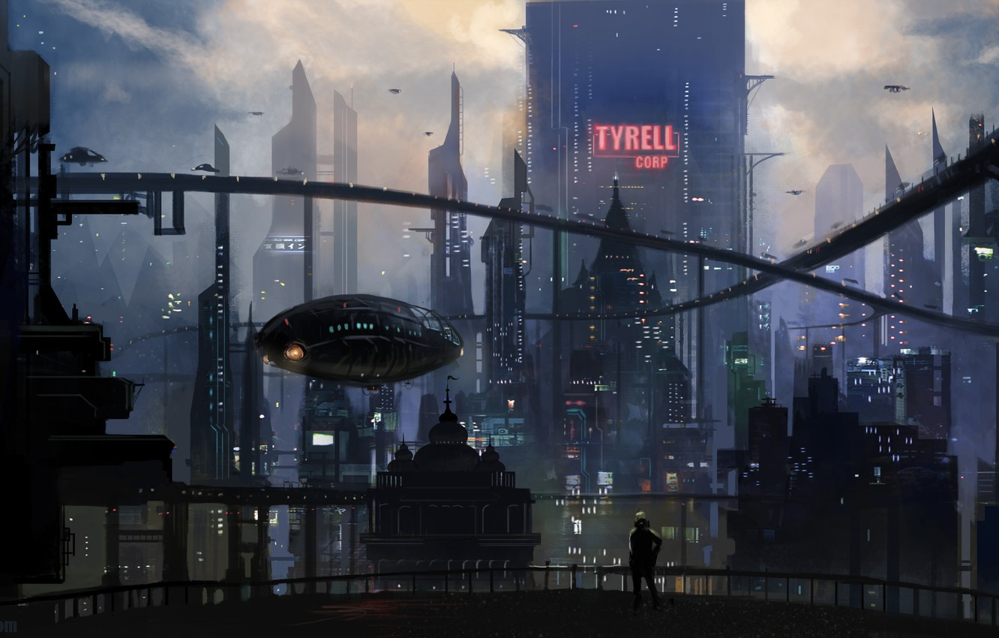

It seems like only yesterday that Alienware hit the 20-year mark in the PC gaming business, but now it's moved on to a full quarter of a century. To celebrate the profitable passage of time, the Dell-owned gaming brand has launched an updated version of its sole remaining Alienware desktop PC, the Alienware Aurora (if you're counting, it's probably considered the R13). The new model retains the same blobby design aesthetic -- usually referred to as "organic" -- while still managing an almost complete overhaul inside and out. It's gotten blobbier and bigger, but with more efficient cooling and a smarter layout.
Of course things have changed, a bit. But the newest Apple Watch feels like a careful polish on the same ideas the Series 6 had. Or, the Series 5 before. There isn't one big new thing that stands out. Now that the Apple Watch feels like it's cleared the experimental zone of wearable tech and become a mainstream product like the iPhone and iPad, maybe this is the watch's destiny. I still see some clear areas where the Apple Watch should evolve, and the larger-screened, quicker-charging Watch 7 makes it more obvious than ever.

The nation's largest wireless carriers dominated the Federal Communications Commission's latest 5G spectrum auction, pushing revenue to a record-shattering price tag of more than $81 billion. The FCC released the names and winning bids of the top five bidders for the auction on Wednesday. Verizon, which bid under the name Cellco Partnership, spent the most on the auction bidding a whopping $45 billion for 3,511 spectrum licenses. AT&T came in second bidding $23 billion for 1,621 licenses. T-Mobile had the third highest bid of $9 billion for 142 licenses.
 The mini fridge features LED lights and an exterior design made to resemble the Xbox Series X. It holds up to 12 beverage cans and has two shelves in its door designed to hold your favorite snacks. The front of the mini fridge also includes a USB port to charge devices and it comes with a DC power adapter. In the US, the mini fridge will first be available exclusively through Target, and Canadians will also be able to buy it through Target's website. In Europe, the mini fridge will be sold by various retailers in a handful of countries. And the company says it's working to expand availability to other countries next year.
The mini fridge features LED lights and an exterior design made to resemble the Xbox Series X. It holds up to 12 beverage cans and has two shelves in its door designed to hold your favorite snacks. The front of the mini fridge also includes a USB port to charge devices and it comes with a DC power adapter. In the US, the mini fridge will first be available exclusively through Target, and Canadians will also be able to buy it through Target's website. In Europe, the mini fridge will be sold by various retailers in a handful of countries. And the company says it's working to expand availability to other countries next year.